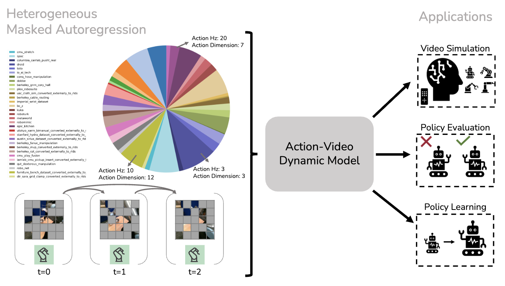
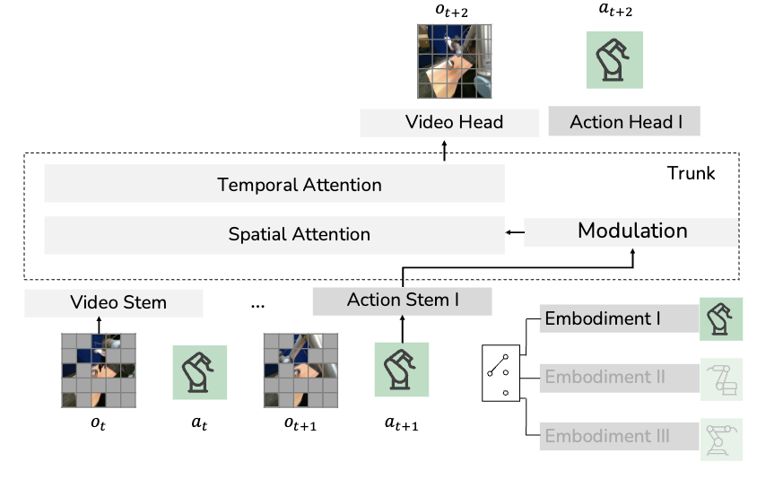
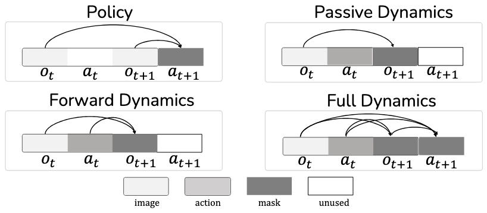
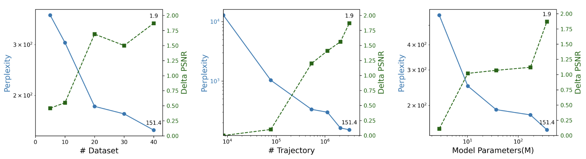

Demo: Recommend to download the code and play with the demos.
Figure: Success cases are displayed on the left, while failure cases are shown on the right. Videos demonstrate outcomes for comparison.
We propose Heterogeneous Masked Autoregression (HMA) for modeling action-video dynamics to generate high-quality data and evaluation in scaling robot learning. Building inter- active video world models and policies for robotics is difficult due to the the challenge in handling diverse settings while re- maining computationally efficient enough to run in real time. HMA uses heterogeneous pre-training from observations and action sequences across different robotic embodiments, do- mains, and tasks. Masked autoregression is used to generate quantized or soft tokens for video predictions.
HMA achieves better visual fidelity and controllability than the previous state-of-the-art robotic video generation models with 15x faster speed in the real world. After post-training, this model can be used as a video simulator from low-level action inputs for evaluating policies and generating synthetic data

HMA pretrains video dynamic models from hetereogeneous data over 40 datasets and 3 million trajectories from real robot teleops, human videos, simulation, and can be post-trained for applications such as video simulation, policy evaluation, and synthetic data generation.

